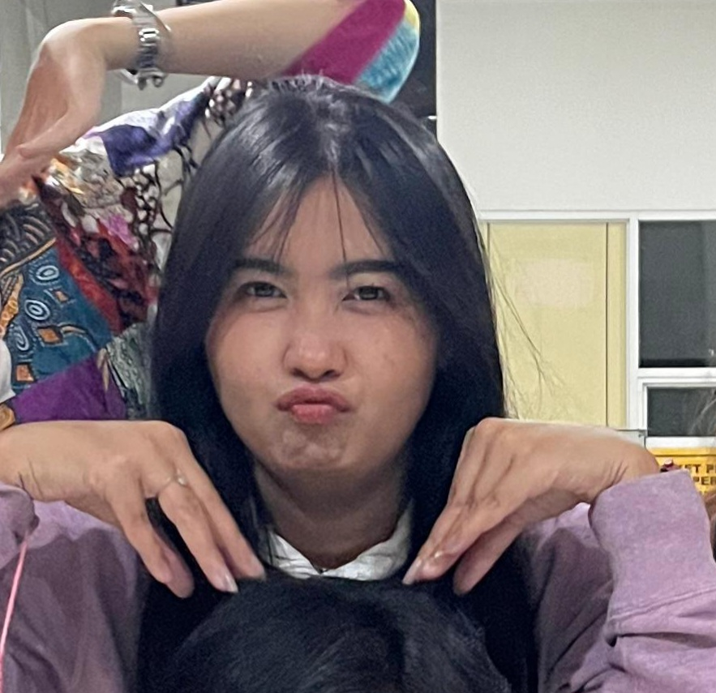
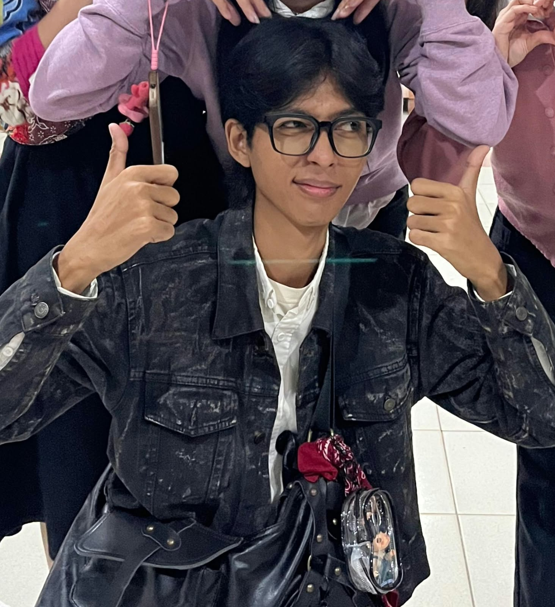
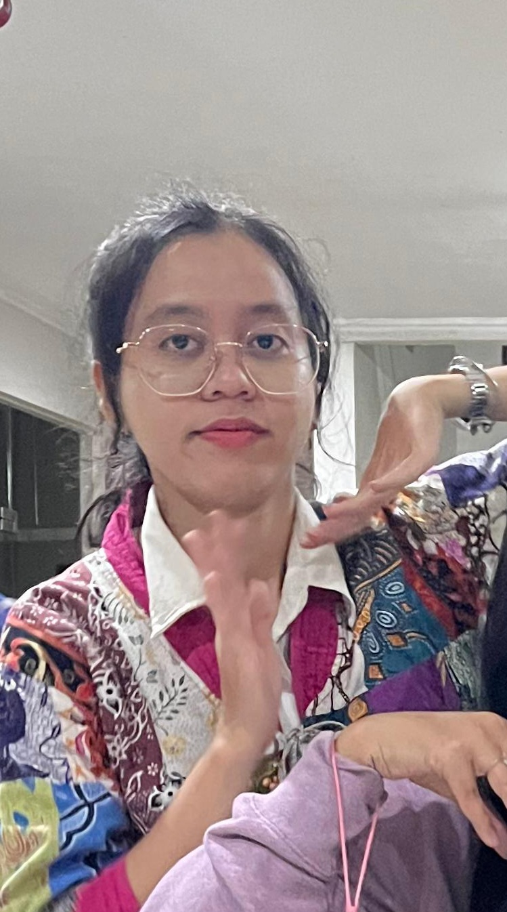

THE PEOPLE
Four people. Four different ways of existing. Somehow, those differences became part of the story.
FOUR DIFFERENT WAYS TO BE HERE.
EMPAT CARA BERBEDA UNTUK ADA DI SINI.
We were never exactly the same.
Different personalities, different habits,
different ways of dealing with everything.
Somehow, those differences worked.

ADELIA MELENIA MUNTHE
The only girl in the family and the youngest at home, somehow she became the older sister of the group. The one who carries a quiet sense of care, keeps things together, and makes the chaos feel a little more manageable.
GENE MESHANI
The middle child who somehow became the group's lovely youngest. Feminine energy, pink obsession, and a kind of weirdness that somehow feels familiar. Maybe that is why being on the same wavelength with her never felt particularly strange.

GALANG PUTRA YUDHA PRADANA
The only guy in the group, and somehow also the navigator. He has a way of figuring out where everyone should go next, occasionally making him feel less like a friend and more like the unofficial teacher of the group.
DENIS NATALIA SIBURIAN
The quiet one. Probably a little strange.
Usually somewhere inside her own thoughts,
observing more than she says.
She may not always know how the others see her,
but somehow she ended up here too —
right in the middle of this story.

Four people who probably would not have
written the same story alone.
Somehow, they ended up writing one together.